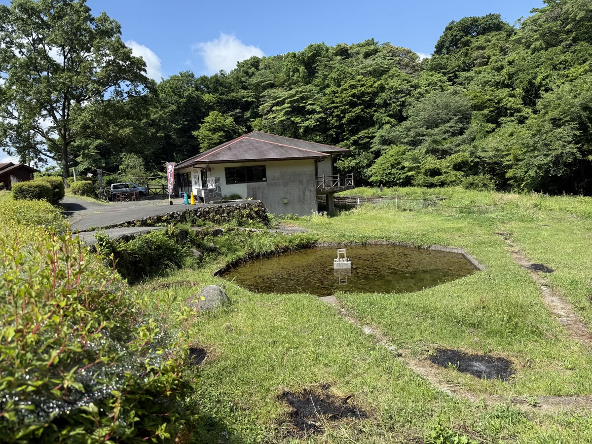
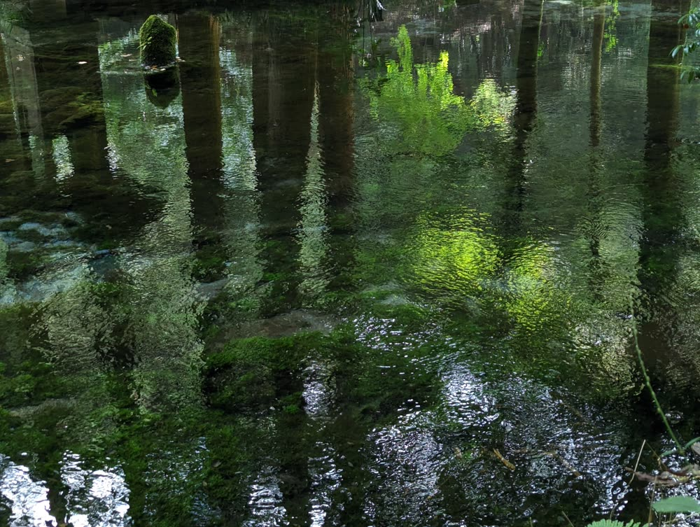

CAFE STAND FOUR SEASONS

名水百選・池山水源のすぐそば。散策のあとは、
水源の水で淹れたコーヒーでひと息つきませんか。
🕙 10:00–16:00｜月曜定休（祝日の場合は火曜）
📍 Googleマップで道順を見る池山水源から、すぐそこ。

環境省の「名水百選」に選ばれた池山水源。毎分30トンの清らかな水が湧き出すその水源のほとりに、この店はあります。
水源を見た帰り道、赤い屋根と「コーヒー」ののぼりが目印です。テラス席はペット同伴OK。テイクアウトして、水のせせらぎと一緒に楽しむのもおすすめです。
| 営業時間 | 10:00–16:00 |
|---|---|
| 定休日 | 月曜（月曜が祝日の場合は火曜） |
| 冬期 | 1〜2月は積雪状況によりお休みする場合があります |
| ご予約 | 不要（予約は受け付けていません。そのままお越しください） |
| お支払い | 現金・クレジットカード・電子マネー |
| お席 | テラス席あり（ペット同伴OK）・お子様連れ歓迎 |
池山水源のほとり。赤い屋根とコーヒーののぼりが目印です。
〒869-2704 熊本県阿蘇郡産山村田尻14-4
駐車場：店舗裏に5台（無料）。池山水源の駐車場もご利用いただけます。
📍 Googleマップで道順を見るはい、予約は受け付けておりませんので、そのままお越しください。
テラス席はペット同伴OKです。リードの着用をお願いしています。
店舗裏に5台分の無料駐車場があります。池山水源の駐車場もご利用いただけます。
コーヒー・カフェラテはテイクアウトできます。
2024年、池山水源のほとりに開業しました。
産山村の美しい水と空気の中で飲むコーヒーの美味しさを、多くの人に知ってほしい——そんな想いで淹れています。
お客様との会話も、この店の楽しみのひとつです。お気軽に声をかけてください。